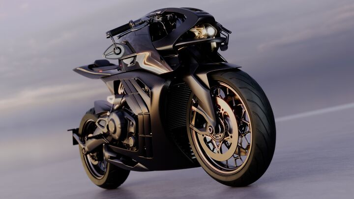

for DC Advanced UX Team.Vivi · Yohan · Libby · Lim Jisu · Katey · Anna
Back Issue

Micromobility
AMB 002: Aston Martin's street-legal bike
Aston Martin and Brough Superior have revealed the AMB 002 Roadster, the road-going successor to the track-only AMB 001: carbon-fibre tank, fairings and body panels over a 5 kg titanium backbone milled from solid, billet engine cases, and an all-new 1,083 cc water-cooled V-twin with 130 bhp and 110 Nm tuned for low-to-mid punch. The design language is forward-biased and sculptural — crescent cooling gills, wire mirror stalks, side strakes that run through the fairing, twin oval exhausts with ribbed heat sinks, a backlit start button and hand-stitched leather pads. 300 units, deliveries Q3 2027.
애스턴마틴과 브로우 슈피리어가 트랙 전용 AMB 001의 공도용 후계자 AMB 002 로드스터를 공개했다. 카본 탱크·페어링·바디 패널, 통 티타늄에서 깎아낸 5 kg 백본 프레임, 빌릿 엔진 케이스, 그리고 저·중회전 펀치에 맞춘 완전 신규 1,083 cc 수랭 V트윈(130 bhp, 110 Nm). 디자인은 앞으로 쏠린 조각적 언어—초승달 냉각 그릴, 와이어형 미러 스토크, 페어링을 관통하는 사이드 스트레이크, 리브 방열핀의 트윈 타원 배기, 백라이트 스타트 버튼, 손바느질 가죽 패드. 300대 한정, 2027년 3분기 인도.
Mother Design has rebranded psychic-guidance platform Keen as a deliberate counter to what creative director Jo Tulej calls the uniformity of wellness design — 'white space, muted palettes, rounded typography.' The system pairs an expressive serif with a humanist sans, folk-art illustration by María Jesús Contreras (cityscapes, countryside, spiritual symbols, everyday scenes), circular forms and a palette rooted in the earliest human pigments: red ochre, burnt umber, warm neutrals and optimistic accents. The brief was to move Keen from fortune-telling to human guidance for clarity and wellbeing.
Mother Design이 심령 상담 플랫폼 Keen을 리브랜딩했다. 크리에이티브 디렉터 조 툴레이가 말한 웰니스 디자인의 획일성—'여백, 뮤트 팔레트, 둥근 서체'—에 일부러 맞선 작업. 표현적인 세리프와 휴머니스트 산세리프를 짝짓고, 마리아 헤수스 콘트레라스의 민속화풍 일러스트(도시, 시골, 영적 상징, 일상 장면), 원형 요소, 그리고 인류 최초의 안료에서 온 팔레트—적황토, 번트 엄버, 따뜻한 중성색과 낙관적 강조색—를 쓴다. 과제는 Keen을 점술에서 명료함과 웰빙을 위한 '사람의 안내'로 옮기는 것.
Yanko's IFA robotics roundup argues the creator economy and local AI have reset what hardware makers build: INMO GO3 and Rokid glasses that translate or run Gemini and ChatGPT on your face, Hengbot's trainable robot dog Sirius, the panda-shaped eldercare companion AnAn, Takway's AI Tamagotchi Sweekar that keeps emotional memory across sessions, XGrids' Gaussian-splat scanners, desk-sized 200B-parameter workstations, and Segway's Navimow H5 Pro with an EdgeMaestro arm that finally trims the edge roboticists used to accept as uncut. The design thread: companionship over performance, and on-device over cloud.
Yanko의 IFA 로봇 총정리는 크리에이터 경제와 온디바이스 AI가 하드웨어 업계의 방향을 다시 잡았다고 본다. 얼굴 위에서 통역하거나 Gemini·ChatGPT를 돌리는 INMO GO3와 Rokid 글래스, Hengbot의 훈련 가능한 로봇개 Sirius, 판다 모양 노인 돌봄 컴패니언 AnAn, 세션을 넘어 감정 기억을 유지하는 Takway의 AI 다마고치 Sweekar, XGrids의 가우시안 스플랫 스캐너, 책상 위 2,000억 파라미터 워크스테이션, 그리고 로봇공학이 포기했던 가장자리를 EdgeMaestro 암으로 깎아내는 세그웨이 Navimow H5 Pro. 디자인의 흐름은 성능보다 동반, 클라우드보다 기기 안.
Motorcycle.com's review of the 2026 Kawasaki Z900RS SE ($14,599, 87.5%) loves the 1972 Z1 homage — teardrop tank, tail cowl, metallic paint, gold wheels and fork tubes — and the new ride-by-wire plus six-axis IMU that make ABS and traction control predictive. The interface is the weak spot: cruise control that quietly bleeds speed after a few minutes, and switchgear the reviewer calls 'confusing and not the most intuitive,' built on button-tap combinations that differ from every other maker. A reminder that two-wheel HMI still has no shared grammar.
Motorcycle.com의 2026 가와사키 Z900RS SE(14,599달러, 87.5점) 리뷰. 1972년 Z1 오마주—물방울 탱크, 테일 카울, 메탈릭 도장, 골드 휠과 포크 튜브—와 ABS·트랙션 컨트롤을 예측형으로 바꾼 새 라이드 바이 와이어+6축 IMU는 호평. 약점은 인터페이스다. 몇 분 지나면 슬며시 속도가 빠지는 크루즈 컨트롤, 그리고 '헷갈리고 직관적이지 않다'는 스위치기어—제조사마다 다른 버튼 조합 탓. 두 바퀴 HMI엔 아직 공통 문법이 없다는 리마인더.
Li Auto will debut the i6 in Europe as the 'Li 6' at the Paris Motor Show in October, with sales targeted for Q4 and dealers being signed in Germany and the Netherlands, then the UK. The 4,950 mm battery-electric SUV is the brand's best seller at home — 152,842 units in eight months, 59% of its domestic sales — with an 87.3 kWh pack, 720 km CLTC and RWD or AWD. Twenty i6s are already on the ground as Solheim Cup fleet cars in the Netherlands, so the first Europeans will meet it on a golf course.
리오토가 10월 파리 모터쇼에서 i6를 'Li 6'로 유럽 데뷔시킨다. 4분기 판매 목표, 독일·네덜란드 딜러 계약 진행 중, 이어서 영국. 전장 4,950 mm의 이 순수전기 SUV는 자국 베스트셀러—8개월 152,842대, 내수의 59%—로 87.3 kWh, CLTC 720 km, 후륜 또는 사륜. 네덜란드 솔하임컵 의전차로 20대가 이미 현지에 깔려 있어, 첫 유럽인들은 골프장에서 이 차를 만난다.
A MIIT filing for the Avatr T09, a 5,285 mm six-seat plug-in hybrid SUV, shows the brand abandoning the sculpted design language that defined it: CarNewsChina's editor says it 'somehow looks like BYD's Yangwang U8.' The timing tracks with sales falling 19.7% year on year to 8,082 units in August. Two engines (1.5 L 110 kW or 2.0 L 155 kW) with dual- or tri-motor layouts, a 71.24 kWh CATL pack and 220 km/h — but the story for designers is a brand trading identity for the safe silhouette of the segment leader.
전장 5,285 mm 6인승 PHEV SUV 아바타 T09의 MIIT 신고 이미지는 브랜드를 규정하던 조각적 디자인 언어를 버린 모습이다. CarNewsChina 편집자는 '어쩐지 BYD 양왕 U8처럼 보인다'고 썼다. 8월 판매 8,082대, 전년 대비 19.7% 감소와 시기가 겹친다. 1.5 L(110 kW) 또는 2.0 L(155 kW) 엔진에 듀얼·트리플 모터, 71.24 kWh CATL 배터리, 220 km/h—하지만 디자이너에게 이 뉴스는 정체성을 세그먼트 1위의 안전한 실루엣과 맞바꾼 브랜드 이야기다.
CARB paperwork dated August 26 confirms a 2027 Ducati Diavel V4 S, following the base V4's certification in March. Wire leads on the fork tubes point to Marzocchi-based Skyhook semi-active suspension, and the bodywork borrows from the Diavel V4 RS: new intake styling, revised radiator shrouds that hide exposed wiring, a new cast-wheel design and a reworked exhaust. Ride modes should update to drive the suspension; the 168 hp V4 stays. Expect the reveal at Ducati's World Première, usually mid-September.
Yanko on the iPhone 18 Pro's headline change: the first mechanical aperture in an iPhone — six laser-cut blades thinner than a hair, four stops down to f/1.48 — replaces ten years of software portrait mode with optical depth of field. It opens wider in low light for about 50% more light, stops down for groups, and hands photographers manual aperture, histogram, white balance and shutter in new Pro Controls, with the same API open to third-party apps. Hair, glasses and jewellery stop being smudged by algorithms. Colour-matched aluminium and glass in Black, Silver, Glacier and Burgundy; preorders September 12.
Yanko가 짚은 iPhone 18 Pro의 핵심 변화: iPhone 최초의 기계식 조리개—머리카락보다 얇은 레이저 커팅 블레이드 6장, f/1.48까지 4스톱—가 10년간의 소프트웨어 인물 모드를 광학 심도로 대체한다. 저조도에선 더 열어 약 50% 더 많은 빛을, 단체 사진에선 조여서 심도를 확보하고, 새 Pro Controls로 조리개·히스토그램·화이트밸런스·셔터를 수동 제어하며 같은 API를 서드파티 앱에 연다. 머리카락·안경·주얼리가 더는 알고리즘에 뭉개지지 않는다. 컬러 매칭 알루미늄·글라스는 블랙·실버·글레이셔·버건디, 9월 12일 사전주문.
Carscoops' Chris Chilton turns six decades of aero into a question of the day: from the 1969 Charger Daytona and 1970 Superbird nose-cone-and-stilts era through the BMW 3.0 CSL 'Batmobile', Countach, 911 Carrera RS 2.7 ducktail and Turbo whale tail, to the Supra Mk4, WRX STI, Escort RS Cosworth's double-decker, 911 GT3 RS, Viper ACR, Veneno and Zenvo TSR-S's tilting centripetal wing. No winner declared — a useful visual reference for form-follows-downforce, and an argument in any design studio.
Basic.Space and Christie's Beverly Hills will show '50 Chairs' from September 25–30 (by appointment), a set united by curiosity rather than period or style, in founder Jesse Lee's words '50 of the most interesting chairs from around the world.' An Eames LCW in rare cowhide from the Eames Foundation sits beside Gufram's 1971 Pratone grass chair, Rick Owens' moose-antler Stag Stool, SeungJin Yang's balloon-and-resin Lounge Chair and Playlab's Teamwork Chair, which only balances with two people on it. Aimed at the next generation of design collectors.
Basic.Space와 크리스티 베벌리힐스가 9월 25~30일(예약제) '50 Chairs'를 연다. 시대나 스타일이 아니라 호기심으로 묶인 컬렉션—창립자 제시 리의 말로는 '전 세계에서 가장 흥미로운 의자 50개'. 임스 재단이 낸 희귀 카우하이드 임스 LCW 옆에 구프람의 1971 프라토네 잔디 의자, 릭 오웬스의 무스 뿔 스태그 스툴, 양승진의 풍선·레진 라운지 체어, 두 사람이 앉아야만 균형이 맞는 Playlab의 팀워크 체어가 놓인다. 다음 세대 디자인 컬렉터를 겨냥.
Kaixin Su, Taoyu Han, Jialu Hou and Shivani Rastogi's Re:Concrete, an honourable mention in Buildner's Concrete Pavilion competition, builds a Mumbai gathering space from precast drainage pipes (about 2.1 m across, 2.5 m long) kept whole or cut lengthwise into curved segments, then rotated, paired and stacked at different heights. Curved cuts become walls, thresholds and benches; elevated cylinders become suspended rooms and circular light wells. Every joint is dry and reversible, so the pavilion grows or shrinks with the pipes available and returns them intact instead of crushing them into aggregate.
수 카이신·한 타오위·허우 자루·시바니 라스토기의 Re:Concrete는 Buildner 콘크리트 파빌리온 공모전 가작으로, 뭄바이의 모임 공간을 프리캐스트 배수관(지름 약 2.1 m, 길이 2.5 m)으로 짓는다. 관을 통째로 쓰거나 세로로 잘라 곡면 조각으로 만든 뒤 돌리고 짝짓고 높이를 달리해 쌓는다. 곡면 조각은 벽·문턱·벤치가 되고, 들어 올린 원통은 공중의 방과 원형 채광정이 된다. 모든 접합은 건식·가역이라 확보한 관 수에 따라 늘고 줄며, 골재로 부수는 대신 관을 온전히 되돌려 보낸다.
Photographer Jing Huang, 2011 Leica Oskar Barnack Newcomer, spent weeks in the Suzhou studio of kesi weaver Hao Naiqiang (Jingwei) and chose presence over documentation: hands, threads, studio corners and the textures of the city rather than a step-by-step of the 'inch of gold' technique that takes months per piece. 'Photography is sometimes about forgetting time rather than recording it,' he says. The series, Threads of Time, shows September 11–15 at Leica Gallery Amsterdam.
2011年徕卡奥斯卡·巴纳克新人奖得主黄京在苏州缂丝艺人郝乃强（敬维）的工作室待了数周，选择'在场'而非'记录'：拍的是手、丝线、工作室角落与城市肌理，而不是'一寸缂丝一寸金'、每件耗时数月的工序分解。'摄影有时是忘记时间，而不是记录时间。'系列《Threads of Time》9月11–15日在徕卡画廊阿姆斯特丹展出。
2011 라이카 오스카 바르낙 신인상 수상 사진가 징 황이 쑤저우 커쓰(刻絲) 직조가 하오나이창(징웨이)의 공방에서 몇 주를 보내며 기록보다 '있음'을 택했다. 한 점에 몇 달 걸리는 '한 치에 금 한 치' 기법을 단계별로 찍는 대신 손, 실, 공방 구석, 도시의 질감을 담았다. '사진은 때로 시간을 기록하는 게 아니라 잊는 일.' 시리즈 'Threads of Time'은 9월 11~15일 라이카 갤러리 암스테르담에서.
Chinese designer Qingshan builds furniture almost entirely from aluminium extrusion — the modular bars of workbenches and 3D-printer frames, bolted rather than welded — and the Turtle Stool is the friendliest result: a low, squat shell-shaped seat on casters with two storage bins built into the frame beneath it, so tools, craft supplies or remotes stay within reach without standing up. Yanko reads it as an IKEA RÅSKOG cart crossed with a shop stool, sized for markets where low seating is the norm.
중국 디자이너 칭산은 워크벤치·3D 프린터 프레임에 쓰는 모듈형 알루미늄 프로파일을 용접 없이 볼트로 조립해 가구를 만든다. Turtle Stool은 그중 가장 친근한 결과물—낮고 납작한 거북 등딱지 모양 좌석에 캐스터, 그리고 프레임 아래 수납함 두 개가 있어 공구·공예 재료·리모컨을 일어나지 않고 꺼낸다. Yanko는 이케아 RÅSKOG 카트와 작업장 스툴의 교배로 읽으며, 낮은 좌석이 익숙한 시장에 맞춘 크기라고 본다.
Ford's China-built Bronco Basecamp, a range-extended EV crossover with two motors, a 49 kWh pack and a 1.5-litre turbo generator (416 hp, 137 miles electric, up to 559 miles total), will reach Australia and New Zealand in the second half of 2027. Its camping-first cabin is the design story: a pop-up electric roof on Outer Banks trim for standing headroom, seats that fold fully flat for an inflatable mattress, a rear 'Wild Kitchen' with fold-down table, a 7.5-litre heated-and-cooled console and 6.6 kW of Pro Power Onboard for appliances.
福特中国产Bronco Basecamp——增程式电动跨界车，双电机、49 kWh电池加1.5T增程器（416马力、纯电220 km、综合最高900 km）——将于2027年下半年登陆澳大利亚与新西兰。设计看点是露营优先的座舱：Outer Banks版电动弹出式车顶可站立，座椅完全放平铺充气床垫，后部'野厨房'带翻折桌板，7.5升冷暖中央扶手箱，以及6.6 kW的Pro Power Onboard对外供电。
포드의 중국산 브롱코 베이스캠프—듀얼 모터, 49 kWh, 1.5 L 터보 발전기의 주행거리 연장형 EV 크로스오버(416마력, 전기 220 km, 합산 최대 900 km)—가 2027년 하반기 호주·뉴질랜드에 간다. 디자인 이야기는 캠핑 우선 캐빈이다. 아우터뱅크스 트림의 전동 팝업 루프로 선 채 머리 공간 확보, 에어매트리스용 완전 폴딩 시트, 접이식 테이블이 달린 후방 '와일드 키친', 7.5 L 냉온 콘솔, 가전용 6.6 kW 프로 파워 온보드.
Creative Boom profiles Kent Wood, an American who studied kinesiology in Florida, ran a hospitality wholesale business in Texas, moved to Manchester for his partner's academic career and, at 30, taught himself motion design. His Kwoo Studio now does what he calls Motion Brand Design — motion systems for brands — shown in a case study for a fictional furniture label, Belo, whose micro-animations demonstrate tactility and approachability. 'I moved countries, changed careers, learned motion design and started building a studio.'
Creative Boom이 켄트 우드를 조명했다. 플로리다에서 운동생리학을 공부하고 텍사스에서 외식업 도매를 하다 파트너의 학업을 따라 맨체스터로 옮겨 서른에 모션 디자인을 독학한 미국인. 그의 Kwoo Studio는 브랜드용 모션 시스템, 이른바 '모션 브랜드 디자인'을 하며, 가상 가구 브랜드 Belo 케이스 스터디의 마이크로 애니메이션으로 촉감과 친근함을 보여준다. '나라를 옮기고, 직업을 바꾸고, 모션 디자인을 배우고, 스튜디오를 짓기 시작했다.'
Sandro Kvirikadze, whose stainless-steel interiors for Keburia and a Tbilisi flower café have run on designboom before, fits a print shop into one of the city's former factories with two materials: warm plywood and reflective steel. The pairing lets industrial references and a contemporary design system sit in one room — mirror-polished planes bouncing the plywood volumes back at you — for an aesthetic designboom calls retro-futurist, and a good reference for anyone fitting out a workshop, studio or maker space on a budget.
케부리아 매장과 트빌리시 꽃집 카페의 스테인리스 인테리어로 designboom에 오른 바 있는 산드로 크비리카제가 도시의 옛 공장 안에 인쇄소를 두 재료로 채웠다. 따뜻한 합판과 반사 스틸. 이 조합으로 산업적 레퍼런스와 동시대 디자인 시스템이 한 방에 공존한다—거울처럼 닦은 면이 합판 볼륨을 되비추는 식. designboom은 이를 레트로 퓨처리스트라 부르며, 예산 안에서 워크숍·스튜디오·메이커 스페이스를 꾸리는 이에게 좋은 참고.